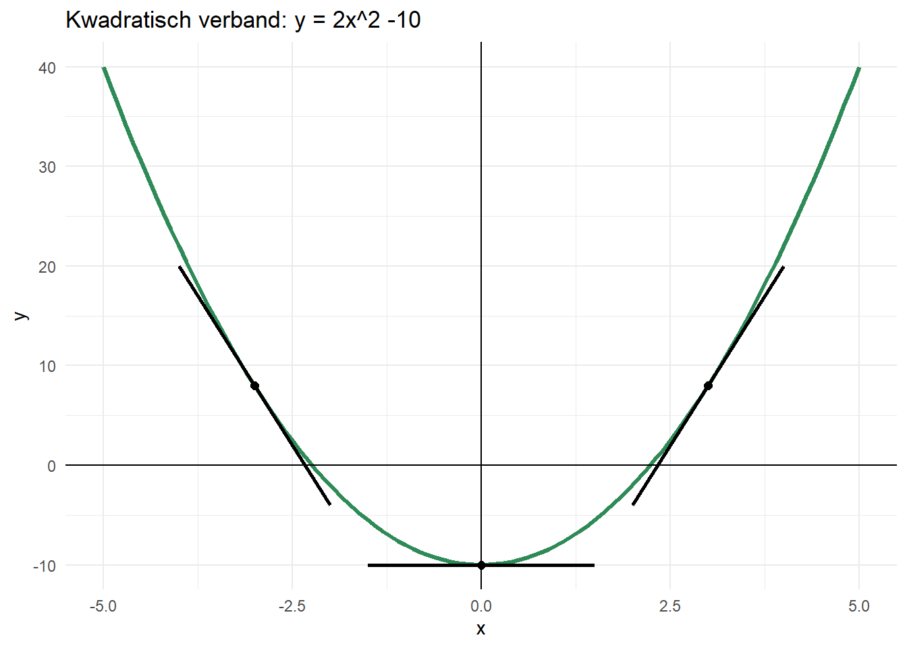

5 Afgeleiden
5.1 Introductie
De afgeleide van een functie beschrijft hoe steil deze functie is, oftewel wat de richtingscoëfficiënt is. Een rechte lijn met de vorm \(y=ax+b\) heeft voor elke \(x\)-waarde dezelfde richtingscoëfficiënt (\(a\)). We kunnen daarom zeggen dat de afgeleide van \(y=ax+b\) gelijk is aan \(y=a\). De afgeleide vertelt iets over hoe snel \(y\) verandert: hoe hoger de richtingscoëfficiënt (\(a\)), hoe sneller \(y\) stijgt of daalt.
De afgeleide van een lineaire vergelijking is dus een constante waarde is die niet verandert voor verschillende \(x\)-waarden. Voor de meeste vergelijkingen is dit echter niet het geval. Dit betekent dat de afgeleide een functie is van \(x\). Met andere woorden: de grafiek heeft niet voor elke \(x\)-waarde dezelfde richtingscoëfficiënt. Neem bijvoorbeeld de vergelijking \(y = x^2 - 10\):
De richtingscoëfficiënt varieert veel voor verschillende \(x\)-waarden: de grafiek daalt eerst voor \(x<0\), loopt dan even horizontaal voor \(x=0\), en stijgt steeds sneller voor \(x>0\).
5.2 Afgeleiden van veel voorkomende vergelijkingen
| Functie | Afgeleide | \(f(x)\) | \(f'(x)\) |
|---|---|---|---|
| \(a\) | 0 | 6 | 0 |
| \(ax\) | \(a\) | \(7x\) | 7 |
| \(ax^b\) | \(abx^{b-1}\) | \(8x^3\) | \(24x^2\) |
| \(c \cdot f(x)\) | \(c \cdot f'(x)\) | \(2x^{13}\) | \(2 \cdot 13x^{12} = 26x^{12}\) |
| \(f(x) + g(x)\) | \(f'(x) + g'(x)\) | \(x^4 + 4x\) | \(4x^3 + 4\) |
| \(a e^{bx}\) | \(ab e^{bx}\) | \(\frac{1}{2} \cdot \pi \sqrt{2} \cdot e^{2x}\) | \(\pi \sqrt{2} \cdot e^{2x}\) |
| \(e^{f(x)}\) | \(f'(x) \cdot e^{f(x)}\) | \(e^{2x^2 - x}\) | \((4x - 1) \cdot e^{2x^2 - x}\) |
| \(a^{f(x)}\) | \(\ln(a) \cdot f'(x) \cdot a^{f(x)}\) | \(5^{4x - 1}\) | \(\ln(5) \cdot 4 \cdot 5^{4x - 1}\) |
| \(\ln(a x) = \ln(a) + \ln(x)\) | \(\frac{1}{x}\) | \(\ln(4x) = \ln(4) + \ln(x)\) | \(\frac{1}{x}\) |
| \(\ln(ax^b) = \ln(a) + b \cdot \ln(x)\) | \(\frac{b}{x}\) | \(\ln(3x\sqrt{x}) = \ln(3) + 1.5 \cdot \ln(x)\) | \(\frac{1.5}{x}\) |
| \(f(x) \cdot g(x)\) | \(f'(x) \cdot g(x) + f(x) \cdot g'(x)\) | \((x^2 - 4)(x^3 + 2x + 3)\) | \([x^2 - 4]'(x^3 + 2x + 3) + (x^2 - 4)[x^3 + 2x + 3]'\) \(= 2x(x^3 + 2x + 3) + (x^2 - 4)(3x^2 + 2)\) \(= 5x^4 - 6x^2 + 6x - 8\) |
| \(\frac{f(x)}{g(x)}\) | \(\frac{g(x) \cdot f'(x) - f(x) \cdot g'(x)}{(g(x))^2}\) | \(\frac{4x + 1}{x^2 + 1}\) | \(\frac{(x^2 + 1) \cdot 4 - (4x + 1) \cdot 2x}{(x^2 +1)^2}\) \(= \frac{4x^2 + 4 - 8x^2 - 2x}{(x^2 + 1)^2}\) \(= \frac{-4x^2 - 2x + 4}{(x^2 + 1)^2}\) |
5.3 Opdrachten
Oefening 5.1 Bereken de afgeleide van de volgende functies:
a. \(f(x)=x^2+15x\)
b. \(f(x)=12x^5-6\)
c. \(f(x)=\frac{7}{x^4}\)
d. \(f(x)=ax^3-bx^5\)